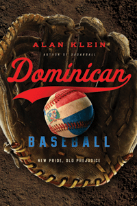

<body bgcolor="#FFFFFF" text="#000000" link="#0000FF" vlink="#CC0000" alink="#CC0000"><center><hr width="350" size="1" align="center" noshade>From the author of <I>Sugarball</I>, a look at the important and contested relationship between Major League Baseball and Dominican player development<hr width="350" size="1" align="center" noshade><p><a href="https://cdcshoppingcart.uchicago.edu/Cart/ChicagoBook.aspx?ISBN=9781439910870&&PRESS=temple" target="_top">Buy this book!</a> | <a href="https://cdcshoppingcart.uchicago.edu/Cart/Cart.aspx?PRESS=temple" target="_top">View Cart</a> | <a href="https://cdcshoppingcart.uchicago.edu/Cart/Cart.aspx?PRESS=temple" target="_top">Check Out</a></p><p></p></center><!--none//--><h1>Dominican Baseball</h1>
<H2>New Pride, Old Prejudice</H2>
<h3>Alan Klein</h3>
<P>cloth 1-4399-1087-1 $89.50, Mar 14, <FONT COLOR=#990033>Available</FONT>
<br>paper 1-4399-1088-X $24.95, Mar 14, <FONT COLOR=#990033>Available</FONT>
<br>Electronic Book 1-4399-1089-8 $24.95 <FONT COLOR=#990033>Available</FONT>
<BR> 200 pp
6x9
</P><h3 align="center"><P><font color="#996633">Outstanding Book Award from the North American Society for the Sociology of Sport,
2015</font></P>
</H3>
<BLOCKQUOTE><I>"If you don't understand the Dominican baseball pipeline in all its dimensions, then you can't say you understand baseball in the twenty-first century. Alan Klein’s </I>Dominican Baseball<I> demands a place on your shelf next to your Bill James guides, </I>Ball Four<I>, and </I>Boys of Summer<I>. In other words it is indispensable."</I>
<br>&#151<b>Dave Zirin</b>, Sports Editor at <I>The Nation</I> and author of <I>Brazil’s Dance with the Devil: The World Cup, the Olympics, and the Struggle for Democracy</I></I></BLOCKQUOTE>
<P>Pedro Martínez. Sammy Sosa. Manny Ramírez. By 2000, Dominican baseball players were in every Major League clubhouse, and regularly winning every baseball award. In 2002, Omar Minaya became the first Dominican general manager of a Major League team. But how did this codependent relationship between MLB and Dominican talent arise and thrive?
<P>In his incisive and engaging book, <I>Dominican Baseball</I>, Alan Klein examines the history of MLB's presence and influence in the Dominican Republic, the development of the booming industry and academies, and the dependence on Dominican player developers, known as buscones. He also addresses issues of identity fraud and the use of performance-enhancing drugs as hopefuls seek to play professionally.
<P><I>Dominican Baseball</I> charts the trajectory of the economic flows of this transnational exchange, and the pride Dominicans feel in their growing influence in the sport. Klein also uncovers the prejudice that prompts MLB to diminish Dominican claims on legitimacy. This sharp, smartly argued book deftly chronicles the uneasy and often contested relations of the contemporary Dominican game and industry.
<BR>&nbsp;<h2>Excerpt</h2><P>Excerpt available at <a href="http://www.temple.edu/tempress">www.temple.edu/tempress</a></p>
<BR>&nbsp;<h2>Reviews</h2>
<p><I>“Alan Klein is a brilliant scholar of sport whose work on the academies, baseball commodity chains, and </i>buscones<i> surpasses all other studies. Laying bare how global capitalism has affected the nature of sport, </I>Dominican Baseball<I> tackles not only serious ethical, political, and economic issues but also the managerial responses these issues have raised. Alan Klein’s provocative book will change how people look at baseball and the Dominican Republic as it raises more far-reaching comprehensive and theoretical questions about sport around the world.”</I><br>&#151<b>Rob Ruck</b>, Professor of Transnational Sport History in the Department of History at the University of Pittsburgh and author of <I>Raceball: How the Major Leagues Colonized the Black and Latin Game</I>
<p><i>"Once again, Klein contributes to our understanding of baseball's expanded territorial appeal, this time through an exploration of Dominican ballplayers, leagues, and agents.... Klein's discussion of youth amateurs, </i>buscones<i> (trainers), and baseball academies is smartly and fairly delivered. So, too, are the nuanced biographical treatments of figures ranging from Enrique Soto, the buscon credited with discovering Miguel Tejada, to former MLB pitcher Ramon Martinez, who has established his own well-regarded baseball academy, and Astin Jacobo Jr., a public representative for independent player developers.... VERDICT A significant study that provides both a micro- and macroexplication of baseball's impact on the Dominican Republic and the island nation's impact on the sport."</i> <br>&#151<b>Baseball Roundup in <i>Library Journal</i></b>
<p><i>"[T]he book is one of contemplative advocacy.... [I]t is one of the several volumes that should grace your book shelf in order to make you competent in discussing international baseball."</i><br>&#151<b><i>Camden Depot</i></b>
<p><i>"[S]uperb.... Klein traces the history of professional baseball’s presence on the island nation, the creation and growth of the system for developing players, and the role of player developers, known as 'buscones.' Klein’s book demonstrates that Major League Baseball resembles any large corporation in terms of reliance on top-down management to cut costs and maximize profits at the expense of the workers — in this case, the players, their families, and the buscones."</i><br>&#151<b><i>Boston Globe</i></b>
<p><i>"If you’re wondering how this island nation of 9.5 million people has produced such a disproportionate share of baseball talent, Klein knows the territory and history. He walks us through the process by which poor Dominican youth...chase the dream through a combination of Major League Baseball assistance and local player developers (known as “Buscones”)."</i><br>&#151<b><i>Dallas Morning News</i></b>
<p><i>"Klein’s book is sharp and smartly argued as he chronicles the contested relations in the modern era of the game and industry."</i><br>&#151<b><i>Redbird Rants</i></b>
<p><i>"Klein writes engagingly and authoritatively for both scholarly and popular audiences.... </i>Dominican Baseball<i> is an energizing and highly readable mix of theoretical and ethnographic work that provides an anthropological perspective Klein deems necessary. His analysis provides fans, students and scholars with a nuanced understanding of the complexities, contradictions, and forces at play in the negotiation of interests between MLB’s rules and policies for maximum profit, and the on-the-ground realities of survival for baseball prospects, their families, and trainers. Moreover, he clearly illustrates how Dominicans are systematically and derisively demonized in US sport media, representations used to rationalize and justify MLB’s neo-colonial control of the island’s baseball institution."</i><br>&#151<b><i>Sport in American History</i></b>
<p><i>"Anthropologist Klein chronicles [the] changes [in MLB] by placing rich interviews of players, coaches, executives, and player developers (</i>buscones<i>) into the context of larger, structural forces. The author offers a unique perspective on identity fraud (e.g., underrepresenting a player’s name or age), steroid use, player exploitation, and many other controversies stemming from the constantly evolving power struggle between the DR and MLB. In addition to providing an important anthropological voice to its subjects, Klein’s research and analysis should be cataloged as part of the historical record of Dominican baseball.... Summing Up: Highly recommended."</i> <br>&#151<b><i> Choice</i></b>
<p><i>"I cannot think of a more important or timely book about baseball in the Caribbean than </i>Dominican Baseball<i> nor a better person to write it than Alan Klein…. He writes lucidly and provocatively about larger theoretical and global questions but in a way that engages readers inside and outside the academy…. </i>Dominican Baseball<i> bolsters Klein’s reputation as an unflinchingly honest and perceptive critic who has much to say about matters affecting sport and society....Klein sketches baseball’s evolution on the island…then offers the best account yet of the growth of the academies and the role that buscones (baseball trainers cum entrepreneurs) have played in recruiting and developing young ballplayers.... Klein combines theoretical rigor with an ethnographer’s appreciation of the subtlety of daily life…..and he employs theory in a way that amplifies his well-crafted and nuanced narratives.... This is a book that anybody working in baseball should read. "</i> <br>&#151<b><i>NINE: A Journal of Baseball History and Culture</i></b>
<p><i>"</i>Dominican Baseball<i> is a fascinating account of the ongoing transnationalization of baseball in the Dominican Republic, as it chronicles the contentious relationship between Major League Baseball and Dominican baseball over the past thirty years.... [A]n important story.... Klein's achievement...is to highlight the point of view and interests of Dominican contenders for their piece of the baseball pie. This...makes a valuable contribution to the literature.... [A] persuasive and authoritative book."</i><br>&#151<b><i>Contemporary Sociology</i></b>
<p><i>"</i>Dominican Baseball<i> reflects both personal passion and rigorous scholarship.... Klein also makes extensive use of his on-site field notes and interviews.... </i>Dominican Baseball<i> is significant for its content, intellectual vigor, and demonstration that serious study of the game must come to terms with the DR.... An insightful and important book."</i> <br>&#151<b><i>The Journal of Sports History</i></b>
<BR>&nbsp;<h2>Contents</h2><P>
<p>Preface
<br>Acknowledgments
<br>
<br>Introduction
<br>1. Thinking about the Global Commodity Chain
<br>2. The Rise of the Academy System
<br>3. A Nation of Buscones
<br>4. Astín Jacobo and the “New Dominicans”
<br>5. Demonizing Dominicans
<br>6. “It Felt like the Marines All Over Again”: The Battle for Dominican Baseball
<br>Conclusion
<br>
<br>Notes
<br>Index
</P><BR>&nbsp;<H2>About the Author(s)</H2>
<P><b>Alan Klein</b> is a Professor of Sociology-Anthropology at Northeastern University. He is the author of <I>Sugarball: The American Game, the Dominican Dream; Growing the Game: The Globalization of Major League Baseball</i>; and <I>Baseball on the Border: A Tale of Two Laredos</I>.</P>
<BR><H2>Subject Categories</H2>
<p><A HREF="/tempress/sports.html" TARGET="_top">Sports</a>
<BR><A HREF="/tempress/latin.html" TARGET="_top">Latin American/Caribbean Studies</a>
<BR><A HREF="/tempress/sociology.html" TARGET="_top">Sociology</a>
</p>
<p align="center"><a href="https://cdcshoppingcart.uchicago.edu/Cart/ChicagoBook.aspx?ISBN=9781439910870&&PRESS=temple" target="_top">Buy this book!</a> | <a href="https://cdcshoppingcart.uchicago.edu/Cart/Cart.aspx?PRESS=temple" target="_top">View Cart</a> | <a href="https://cdcshoppingcart.uchicago.edu/Cart/Cart.aspx?PRESS=temple" target="_top">Check Out</a></p><p><font face="Arial" size="1"><a href="copyright.html" onMouseOver="window.status='Web Copyright Policy';return true;" onMouseOut="window.status=''" title="Web Copyright Policy">&copy;</a> 2015 <a href="http://www.temple.edu" target="new" onMouseOver="window.status='Link to Temple University home page';return true;" onMouseOut="window.status=''" title="Link to Temple University home page">Temple University</a>. All Rights Reserved. http://www.temple.edu/tempress/titles/2298_reg.html</font></p>